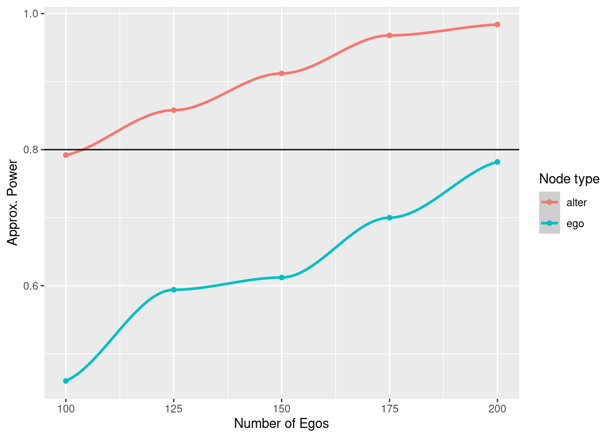

14.2 Example 2: Spillover effects pre-post effect
Now the dynamics are different. Instead of having a treated and control group, we have a single group over which we will measure behavioral change. We will simulate individuals in their initial state, still 0/1, and then simulate that the intervention will make them more likely to have \(y = 1.\) We will also assume that subjects generally don’t change their behavior and that the baseline prevalence of zeros is higher. The simulation steps are as follows:
For each individual in the population, draw the underlying probability that \(y = 1\). With that probability, assign the value of \(y\). This applies to both ego and alter.
Randomly drop some egos, and their corresponding alters due to attrition.
Simulate alters’ behavior using their egos as the treatment. Both ego and alter’s underlying probability are increased by the chosen odds.
To control for the underlying probability that an individual has \(y = 1\), we use conditional logistic regression (also known as matched case-control logit,) to estimate the treatment effects.
Accept/reject the null and store the result.
# Simulation function
library(survival)
sim_data_prepost <- function(n) {
# Step 1: Sampling population of egos
y_ego_star <- rbeta(n, beta_pars[1], beta_pars[2])
y_ego_0 <- runif(n) < y_ego_star
# Step 2: Simulating attrition
todrop <- order(runif(n))[1:(n * attrition)]
y_ego_0 <- y_ego_0[-todrop]
n <- n - length(todrop)
y_ego_star <- y_ego_star[-todrop]
# Step 3: Simulating alter's effect. We assume the same as in
# ego
y_alter_star <- rbeta(n * n_a, beta_pars[1], beta_pars[2])
y_alter_0 <- runif(n * n_a) < y_alter_star
# Simulating post
y_ego_1 <- runif(n) < plogis(qlogis(y_ego_star) + log(odds_h_1))
tr_alter <- as.integer(rep(y_ego_1, n_a))
y_alter_1 <- runif(n * n_a) < plogis(qlogis(y_alter_star) + log(odds_h_1) * tr_alter) # So only if ego did something
# Step 4: Computing test statistic
y_ego_0 <- as.integer(y_ego_0)
y_ego_1 <- as.integer(y_ego_1)
y_alter_0 <- as.integer(y_alter_0)
y_alter_1 <- as.integer(y_alter_1)
d <- data.frame(
y = c(y_ego_0, y_ego_1),
tr = c(rep(0, n), rep(1, n)),
g = c(1:n, 1:n)
)
res_ego <- tryCatch(
clogit(y ~ tr + strata(g), data = d, method = "exact"),
error = function(e) e
)
d <- data.frame(
y = c(y_alter_0, y_alter_1),
tr = c(rep(0, n * n_a), tr_alter),
g = c(1:(n * n_a), 1:(n * n_a))
)
res_alter <- tryCatch(
clogit(y ~ tr + strata(g), data = d, method = "exact"),
error = function(e) e
)
if (inherits(res_ego, "error") | inherits(res_alter, "error"))
return(c(ego = NA, alter = NA))
# Step 5: Reject?
c(
# ego = res_ego$p.value < alpha,
ego = summary(res_ego)$coefficients["tr", "Pr(>|z|)"] < alpha,
alter = summary(res_alter)$coefficients["tr", "Pr(>|z|)"] < alpha,
ego_test = coef(res_ego),
alter_glm = coef(res_alter)
)
}# We always set the seed
set.seed(88)
# Making space and running!
spower <- NULL
for (s in sizes) {
# Run the simulation for size s
simres <- rowMeans(
replicate(n_sims, sim_data_prepost(s)),
na.rm = TRUE
)
# And store the results
spower <- rbind(spower, simres)
}library(ggplot2)
spowerd <- rbind(
data.frame(size = sizes, power = spower[,"ego"], type = "ego"),
data.frame(size = sizes, power = spower[,"alter"], type = "alter")
)
spowerd |>
ggplot(aes(x = size, y = power, colour = type)) +
geom_point() +
geom_smooth(method = "loess", formula = y ~ x) +
labs(x = "Number of Egos", y = "Approx. Power", colour = "Node type") +
geom_hline(yintercept = 1 - beta_pow)
As shown in Chapter 17, we can use a linear regression model to predict sample size as a function of statistical power:
# Fitting the model
power_model <- glm(
size ~ power + I(power^2),
data = spowerd, family = gaussian(), subset = type == "alter"
)
summary(power_model)##
## Call:
## glm(formula = size ~ power + I(power^2), family = gaussian(),
## data = spowerd, subset = type == "alter")
##
## Deviance Residuals:
## 6 7 8 9 10
## -0.8182 1.7278 0.9180 -7.9188 6.0912
##
## Coefficients:
## Estimate Std. Error t value Pr(>|t|)
## (Intercept) 611.4 666.3 0.918 0.456
## power -1553.8 1504.7 -1.033 0.410
## I(power^2) 1147.9 844.8 1.359 0.307
##
## (Dispersion parameter for gaussian family taken to be 52.1536)
##
## Null deviance: 6250.00 on 4 degrees of freedom
## Residual deviance: 104.31 on 2 degrees of freedom
## AIC: 37.379
##
## Number of Fisher Scoring iterations: 2## 1
## 104